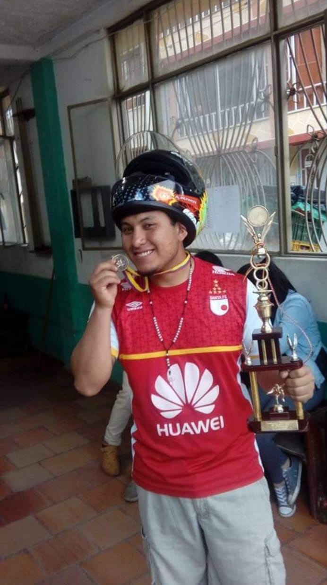

Mi Proyecto de Vida
Mis padres
La influencia de mis padres en mi vida es profunda y perdurable. Desde el momento en que llegué al mundo, su amor y dedicación han sido los pilares que han moldeado mi carácter y han guiado mi camino. Mi madre, quien me tuvo a una edad temprana mientras aún estaba en la escuela, y mi padre, cuya presencia y apoyo han sido constantes a lo largo de los años, han sido mis modelos a seguir y mis mayores inspiraciones. A través de su ejemplo, aprendí el valor del trabajo duro, la importancia de la perseverancia y la necesidad de enfrentar los desafíos con coraje y determinación. Su sacrificio y dedicación para brindarme las mejores oportunidades posibles han sido un testimonio vivo de su amor incondicional y su compromiso con mi bienestar y desarrollo. Desde la niñez en el barrio El Poa hasta los días en el colegio República Dominicana, su influencia ha sido omnipresente, guiándome en cada paso del camino. Cada decisión que he tomado y cada logro que he alcanzado lleva su impronta, recordándome constantemente la fuerza y el amor que me han dado. En resumen, mis padres han sido los arquitectos de mi vida, construyendo sobre los cimientos de amor, valores y resiliencia que han dejado una marca indeleble en mi ser. Sin su influencia, no sería quien soy hoy en día, y por eso estoy eternamente agradecido.
Mi madre:
Mi vida ha sido moldeada por el amor y la valentía de mi madre desde el principio. A los 16 años, cuando aún estaba en la escuela, ella me trajo al mundo con determinación y coraje. A pesar de los desafíos que enfrentaba como madre adolescente, no escatimó esfuerzos para brindarme todo su amor y apoyo. Trabajar en un call center del BBVA mientras cuidaba de mí no era tarea fácil, pero mi madre lo hacía con dedicación y sacrificio. Su ejemplo de perseverancia y compromiso dejó una marca profunda en mí, enseñándome la importancia del trabajo duro y la responsabilidad. Crecí rodeado de su amor incondicional, compartiendo momentos felices con mi familia en el barrio El Poa y en el Colegio República Dominicana. La mudanza, los cambios y los desafíos nunca nos separaron; al contrario, nos unieron aún más. El cuidado de mi abuela y el afecto de mis primos complementaron la sólida base que mi madre había construido para mí. Cada experiencia, cada sacrificio, todo lo que hizo por mí, contribuyó a forjar mi carácter y a definir quién soy hoy en día. La influencia de mi madre sigue guiando mis pasos, recordándome la importancia del amor, la perseverancia y el valor de la familia. Su amor inquebrantable es el faro que ilumina mi camino y me impulsa a ser la mejor versión de mí mismo.
Mi padre:
La historia de mi padre es una fuente inagotable de inspiración para mí. A la temprana edad de 17 años, se enfrentó al desafío de ser padre mientras aún estaba en pleno proceso de formación académica. Su decisión de dejar los estudios para asumir la responsabilidad de cuidar de mí refleja su profundo compromiso y amor incondicional. Durante esos años, mi padre trabajó incansablemente para asegurarse de que no nos faltara nada. Cada día, con determinación y perseverancia, se esforzaba por construir un futuro mejor para nuestra familia. Después de dedicar años al trabajo duro, finalmente pudo completar su bachillerato, demostrando su dedicación a la educación y su deseo de superación personal. El sacrificio y la determinación de mi padre no terminaron ahí. Con el fruto de su arduo trabajo, logró comprar una moto, un símbolo tangible de sus logros y su compromiso con nuestro bienestar. Y ahora, como guarda de seguridad, continúa desempeñando su labor con integridad y dedicación, asegurando nuestra seguridad y proporcionando para nuestra familia. El ejemplo de mi padre ha sido fundamental en la formación de mi carácter y en mi enfoque hacia la vida. Su amor inquebrantable, su dedicación incansable y su capacidad para superar adversidades han sido las fuerzas motrices que me han guiado en mi propio camino. Cada logro que alcanzo y cada desafío que enfrento lleva su influencia, recordándome el poder del amor, la determinación y el sacrificio en la construcción de un futuro mejor. Estoy eternamente agradecido por su ejemplo y su amor, que han sido los cimientos sobre los cuales he construido mi vida.